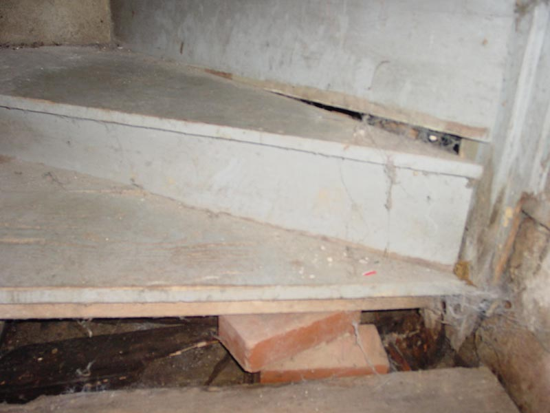

|  |
|
The bottom three corner steps are well constructed of solid wood, so why are they so wobbly? With no adequate attachment on the inside of a corner, they rely upon internal supports for that side. This is a natural design for corner stairs. Unfortunately, there is no cement under the stairs and the wood supports are buried in the sand and dirt. Over time the moisture has rotted these supports, especially on the bottom step. Note how the support has been replaced with two stacked bricks which tend to rot at a far slower rate. |